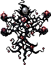
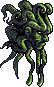
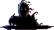
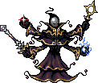

Les 8 régions
Bestiaire des biomes
Chaque région reprend l'un des 3 gabarits ci-dessus (mêmes comportements), simplement plus costaud — et donne accès à un palier d'équipement supérieur.
| Créature | Niveau requis | PV | Dégâts | XP | Or | Palier d'équipement (10%) |
|---|---|---|---|---|---|---|
 Résinard Crêtes d'Ambre |
Niv. 7+ | 60 | 15 | 12 | 30 | Palier I |
 Bourbelin Marais de Suin |
Niv. 10+ | 28 | 10 | 8 | 20 | Palier I |
 Murmurance Forêt Chuchote |
Niv. 13+ | 60 | 15 | 15 | 38 | Palier II |
Craquelin Pics Verglacés |
Niv. 16+ | 120 | 30 | 24 | 60 | Palier II |
 Cendrelin Dunes Cendrées |
Niv. 19+ | 49 | 18 | 14 | 35 | Palier III |
 Luisereau Abysses Luisantes |
Niv. 22+ | 96 | 24 | 24 | 60 | Palier III |
 Gravide Jardins Pétrifiés |
Niv. 25+ | 180 | 45 | 36 | 90 | Palier IV |
Fulgurin Couronne d'Orage |
Niv. 28+ | 70 | 25 | 20 | 50 | Palier IV |
Tous les monstres de biome donnent aussi 3% de chance de gemme, comme les monstres de base. Chaque région abrite en plus 2 gobelins neutres (mêmes stats qu'à Vert-Hige, voir plus haut), qui donnent alors du butin au palier de la région s'ils sont vaincus.